Temporary features, temporary footprints
Short-term events belong in existing touchpoints, not in permanent navigation.
protected case study
This case study is password protected. Don't have the code? Email hi@annikagromig.com.
case study
MainAqila, Eintracht Frankfurt
MainAqila is the official app of Bundesliga club Eintracht Frankfurt. It brings everything a fan could want into one place: club news, live match data, fan merch and ticket shops, betting games, exclusive raffles, news from the region around Frankfurt, and a lot more.
As a freelance Senior Product Designer, I designed new features inside this already busy product, adapted the experience for tablets, and moved the design library from Sketch to a fully documented Figma system.
the product
MainAqila is much more than a results app. On matchday it is a live ticker with goal alerts, scores, line-ups, statistics and the league table. The rest of the week it is a news feed, a fan shop, a ticket counter, a radio and TV station, and a mobile wallet.
Inside the app, fans can:
That breadth is the app's biggest strength, and also its biggest design challenge. Every new feature has to compete for attention with everything that is already there.
How do you keep adding value to an app that already does a lot, without making it feel like more?
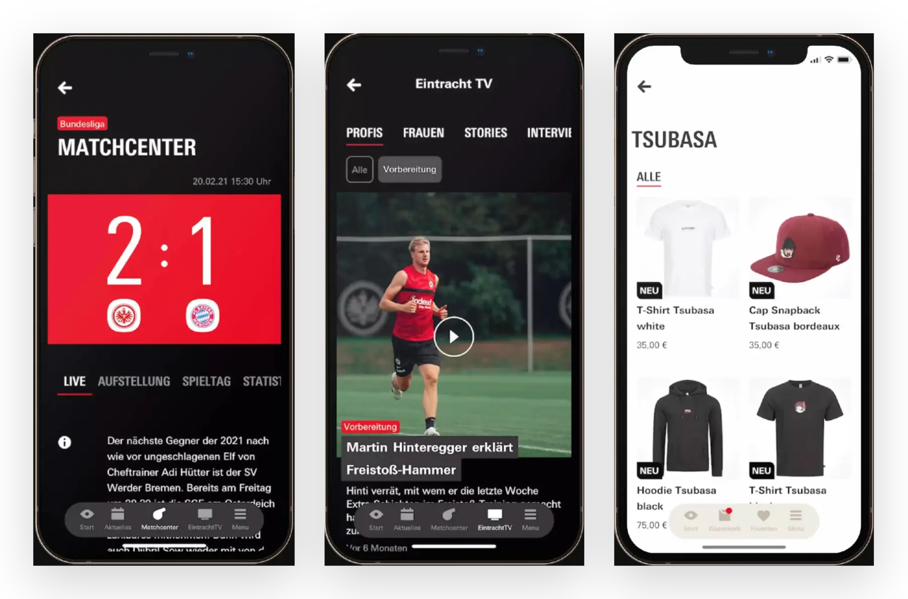
my role
My work covered both planned projects and the day-to-day business of a fast-moving product team. Three projects show the range best:
Alongside these, I designed an automatic pay parking service for stadium visitors and an information page for the stadium, including upcoming events such as concerts, plus many smaller tasks that came up in day-to-day work.
showcase 01 · adler shopping week
Adler Shopping Week was a short-term event in Frankfurt. For one week, participants received discounts in selected local shops and restaurants. To take part, fans needed the MainAqila app and a voucher bought inside it.
My task was to design the UX and UI for the event and embed it into the existing app: internal touchpoints, information and landing pages, partner shop pages, and the voucher purchase.
The event only ran for a week, so it shouldn't leave a permanent mark on the app's navigation. Instead of adding a new menu item, I promoted the event through teasers at existing touchpoints. Once the event is over, it more or less disappears again.
A temporary feature deserves a temporary footprint.
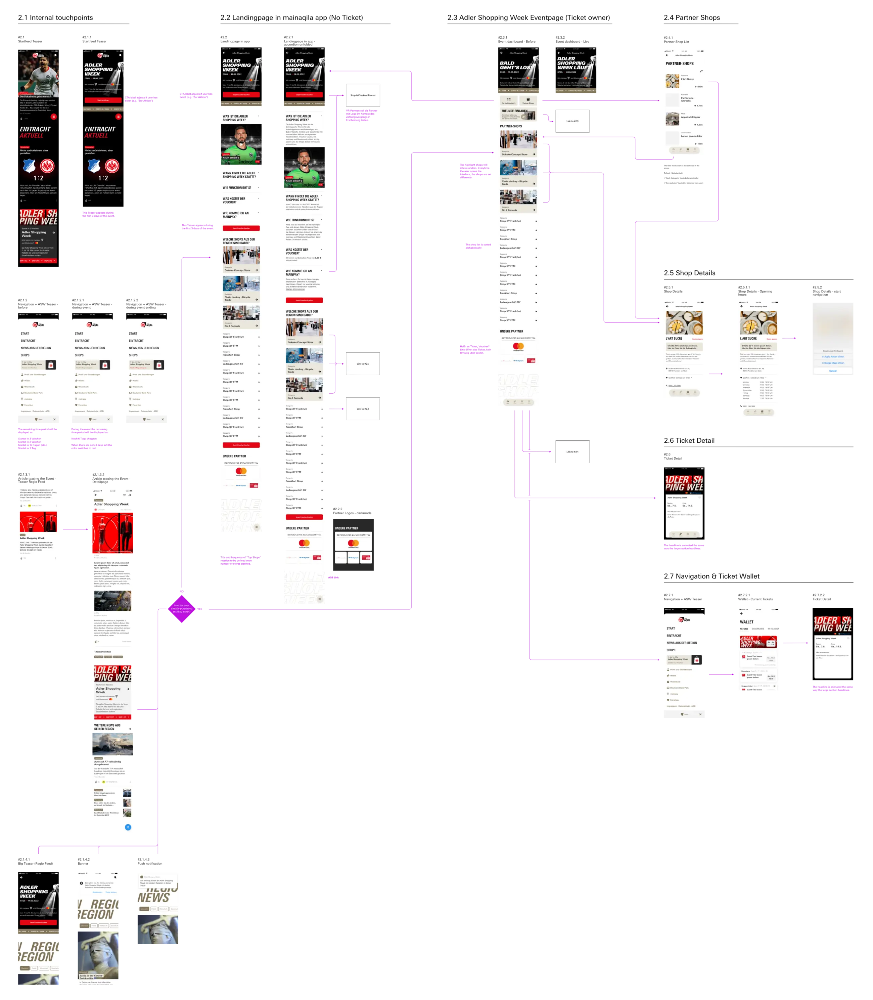
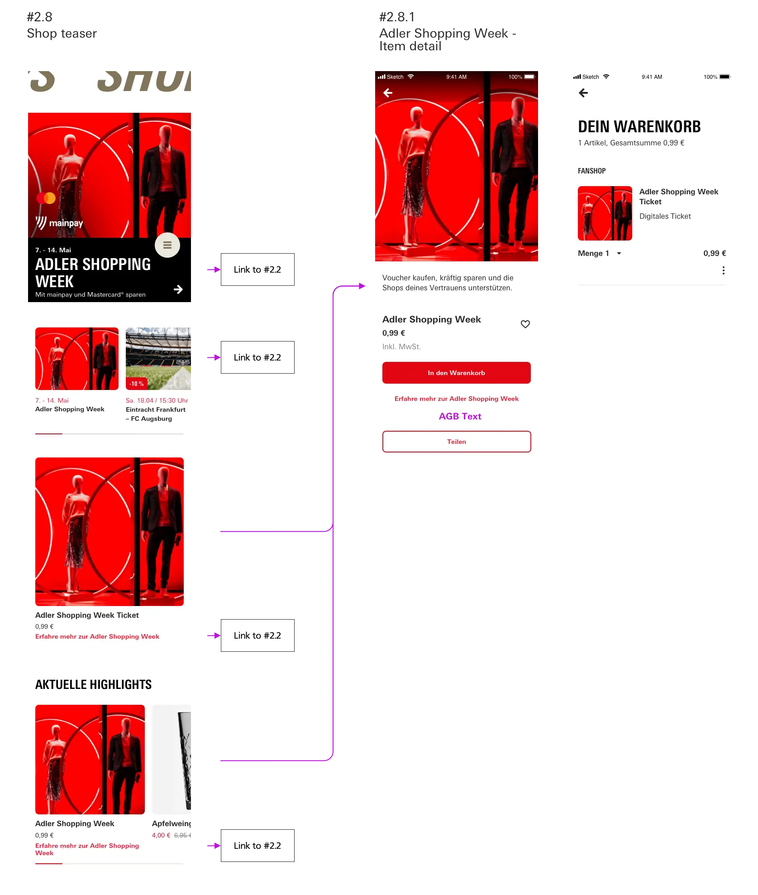
Following the club's brand principles, I created a distinct look for this special space in the app. Recurring visuals make the event instantly recognizable wherever it shows up.
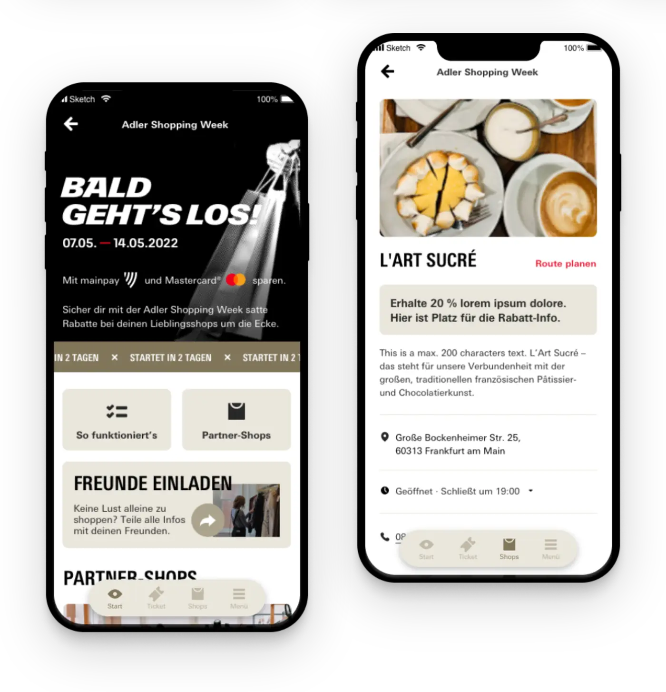
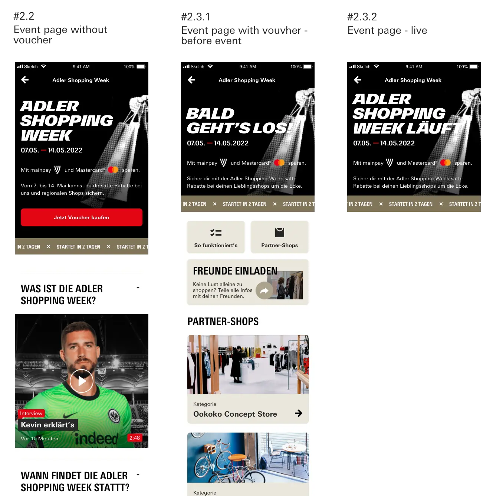
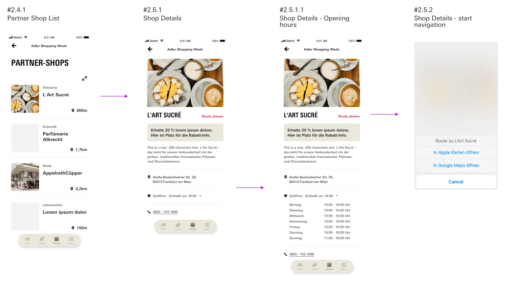
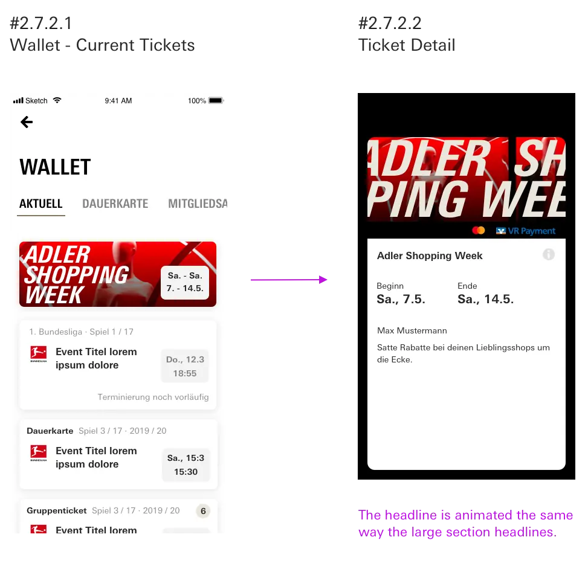
showcase 02 · tablet adaptation
My first task at MainAqila was to adapt the mobile app for tablets. Stretching the phone layouts would have left large screens feeling empty, while a completely new design would have broken familiarity for fans using both devices.
Instead, I set up the foundations the tablet layouts are built on:
With these in place, existing modules like the news feed, the next match and the league table can be rearranged into multi-column layouts instead of being redesigned one by one. At the time of the project, the tablet version was still in development.
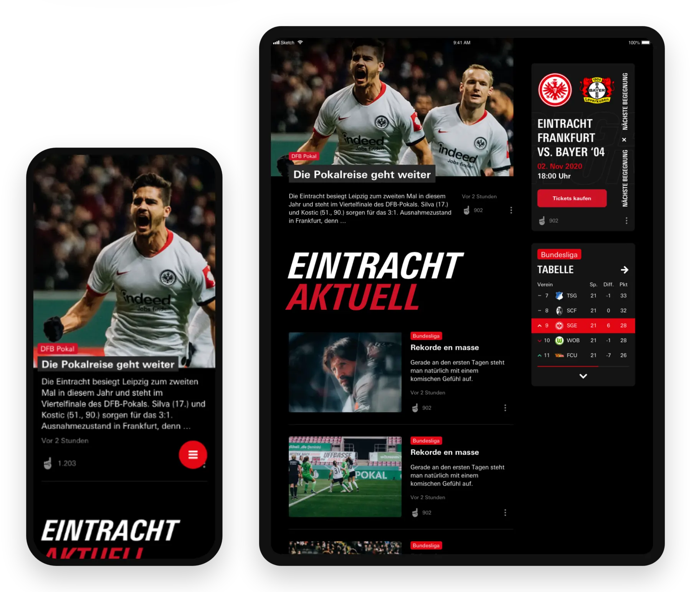
showcase 03 · design library
MainAqila was growing quickly, and its documentation hadn't kept pace. When the team decided to switch from Sketch to Figma, they asked me not only to move the library over, but to enrich it with proper documentation. The final result was filed in Confluence for all stakeholders.
Documentation isn't an afterthought. It is part of the design.
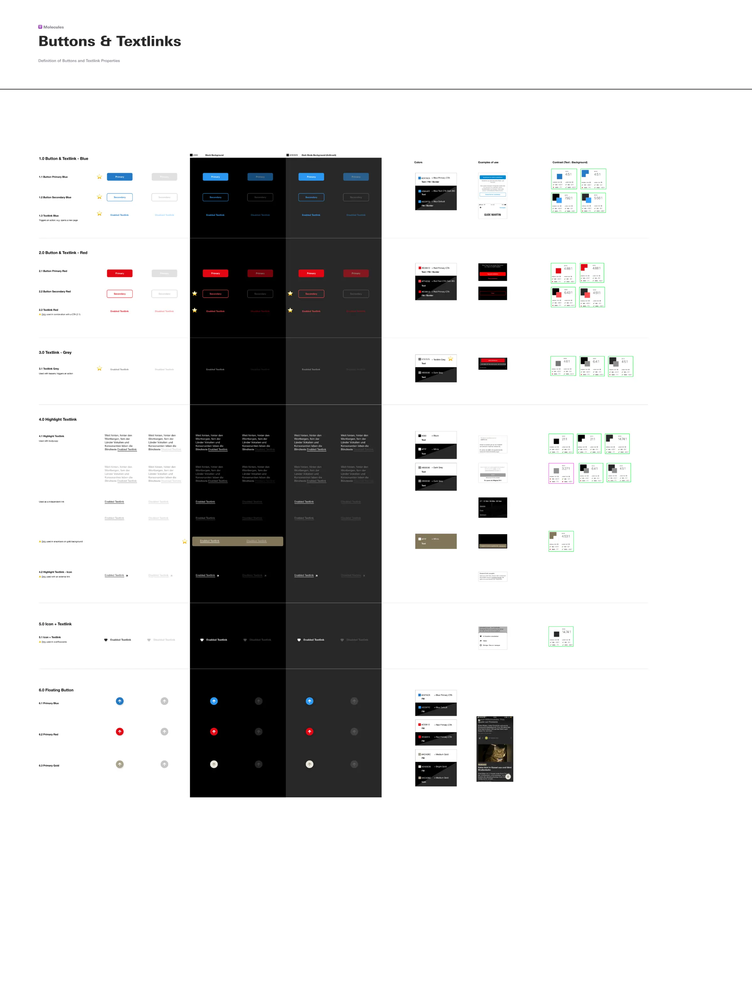
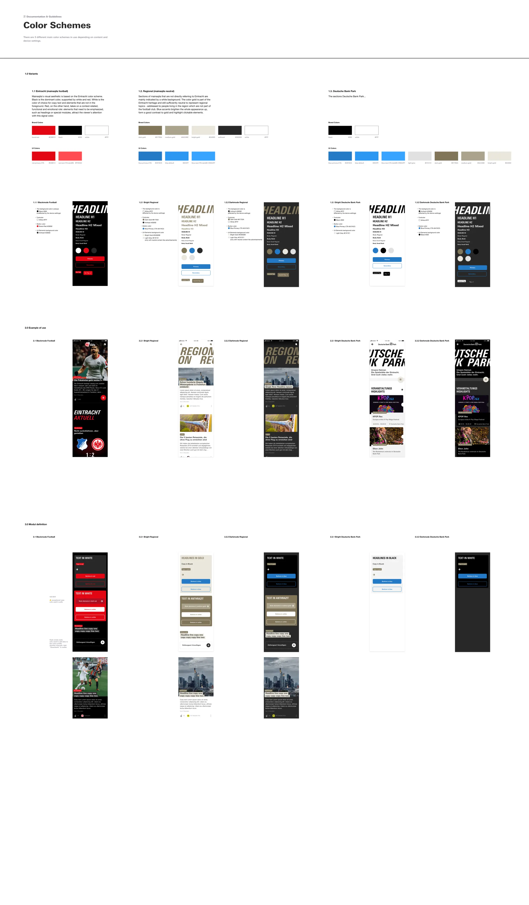
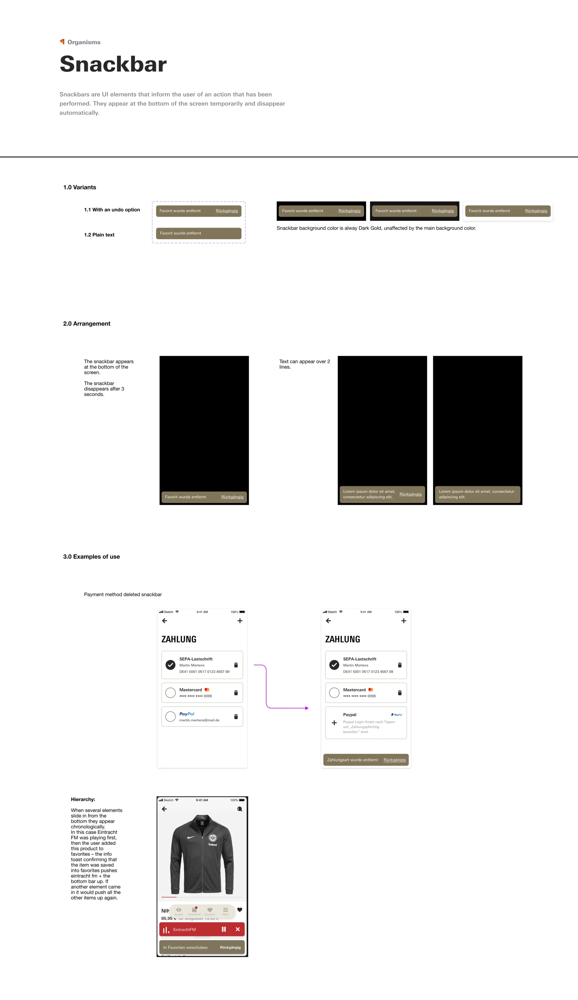
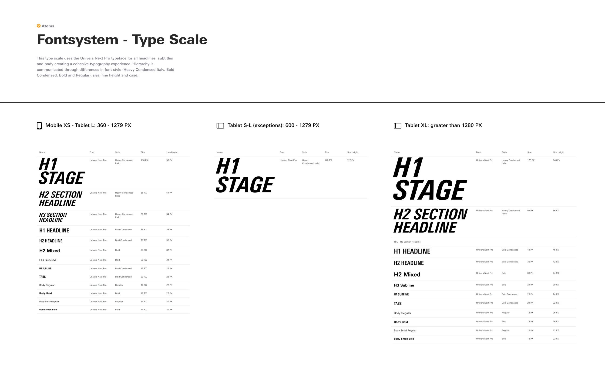
the outcome
Across all three projects, the common thread was the same: helping a large, content-rich app keep growing while staying easy to use.
Short-term events belong in existing touchpoints, not in permanent navigation.
Type, grid and text rules carry an app to new screen sizes better than redesigning screen by screen.
A tool switch is the best moment to capture the reasoning behind every component.
See every screen & flow
A visual-only collection of the user flows, screens and library pages from this project, all in one place.